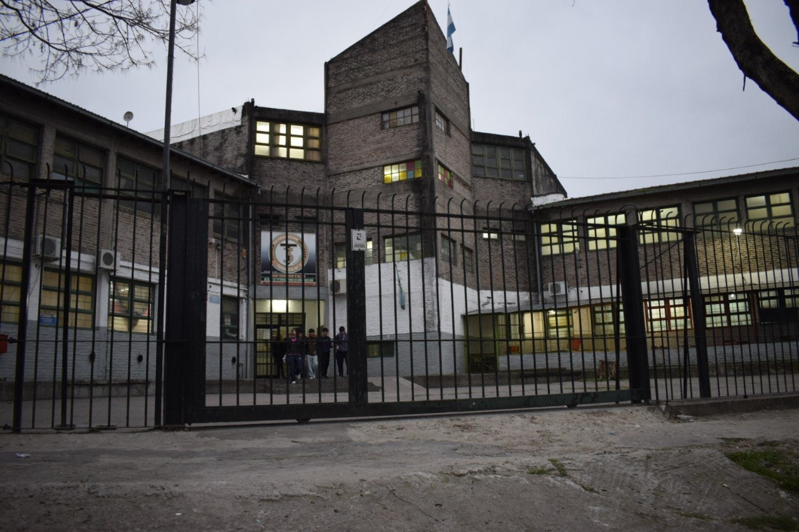

En 1983, el presidente saliente entregó la banda presidencial a Raúl Ricardo Alfonsín, marcando el inicio de la democracia tras años de dictadura. La recuperación democrática significó dejar atrás un periodo de sacrificios humanos, materiales y éticos. Ese proceso histórico estuvo condicionado por la Guerra de Malvinas, donde jóvenes soldados con escasa instrucción fueron enviados a una lucha desigual, que concluyó con 649 argentinos muertos y la rendición del país.



En medio de ese contexto desolador, vecinos de San Antonio de Padua comenzaron a soñar con proyectos que transformaran su comunidad. Ya venían trabajando en el Jardín de Infantes Nº 907 y decidieron avanzar hacia la creación de una Escuela Técnica. Se organizó un censo que arrojó 100 inscriptos en un solo día, y se pidió abrir cursos provisorios en la Escuela Primaria Nº 16. Así nació la Comisión Procreación de la Escuela Técnica, con el objetivo de garantizar educación secundaria en la zona.
Con la colaboración de docentes, vecinos y autoridades, se logró en 1985 la habilitación de la escuela en el edificio de la Primaria Nº 16. Luego, en 1985, se consiguió un terreno propio cedido por la Municipalidad de Merlo. Gracias al empuje de la cooperadora y subsidios gestionados por representantes políticos, se iniciaron las obras en 1988. La comunidad, con gran compromiso, consolidó el proyecto educativo como un objetivo colectivo.
Con la colaboración de docentes, vecinos y autoridades, se logró en 1985 la habilitación de la escuela en el edificio de la Primaria Nº 16. Luego, en 1985, se consiguió un terreno propio cedido por la Municipalidad de Merlo. Gracias al empuje de la cooperadora y subsidios gestionados por representantes políticos, se iniciaron las obras en 1988. La comunidad, con gran compromiso, consolidó el proyecto educativo como un objetivo colectivo.
La creación de la escuela técnica respondió a la convicción de que el desarrollo argentino necesitaba técnicos y mano de obra especializada. A pesar de la hiperinflación y las dificultades económicas, se redoblaron esfuerzos hasta que en 1990 se concretó el sueño de contar con un espacio propio. El proyecto educativo estuvo directamente ligado al ideal de una Argentina industrializada y soberana, que transformara sus materias primas y fortaleciera su economía.
La democracia también enfrentó graves crisis económicas y políticas. El gobierno de Alfonsín debió convivir con presiones militares y económicas, llevando adelante hechos históricos como el Juicio a las Juntas. Luego, el colapso de 2001 mostró cómo las políticas neoliberales habían degradado la industria nacional y la educación técnica, eliminando incluso al CONET. Sin embargo, tras esa crisis comenzó un nuevo periodo democrático que permitió estabilizar la política y la economía, sancionando en 2005 la Ley de Educación Técnico Profesional y elevando el presupuesto educativo al 6% del PBI en 2006.
Actualmente...
Hoy, tras 40 años de democracia, se reconoce el valor de aquellos vecinos que en tiempos oscuros se animaron a fundar una escuela técnica en Padua. Su esfuerzo dio origen a una institución educativa de referencia, que sigue formando técnicos y acompañando el desarrollo local.
Actualmente, el proyecto educativo se entiende como un motor indispensable para la igualdad de oportunidades, la producción nacional y el fortalecimiento de la democracia argentina. La escuela técnica brinda a los jóvenes herramientas para insertarse en el mundo laboral y proyectar un futuro mejor, a la vez que fomenta la innovación, la movilidad social y el compromiso con la comunidad. De este modo, se consolida como un pilar esencial para el desarrollo local y la construcción de una sociedad más justa y equitativa.